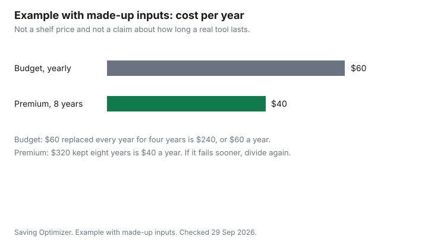

Personal Care · Canada
Hair Tools in Canada: When a Premium Dryer or Straightener Is Worth It
A premium dryer or straightener is worth the price when the cost per year, on the years you will actually keep it, beats replacing a cheaper tool more often, and when the warranty you can use in Canada covers the failure you are worried about. It is not worth the price because a sale week arrived. This page does not rank a brand and does not name a best tool. Home colour versus the salon is the colour guide. Whether an extra warranty contract pays is the extended-warranty guide. Tracking a price over time is the price-tracking guide. Sale dates for beauty, without made-up percents, are the Black Friday guide.
Disclosure: Amazon.ca storefront types and discounted retailer gift cards are offer types. Saving Optimizer may earn a commission if a partner link is added later. No storefront or gift-card partnership is claimed. A lower card price does not change the cost per year of a tool you will not keep. Education only.
Key takeaways
- Cost per year is the price divided by the years you will keep the tool, plus what you spend to replace it. A sale price only helps if you were going to buy that tool anyway.
- Read motor type, heat settings, weight, and the warranty card as facts on the box. They are not a ranking.
- A lookalike is not the tool in the advertisement. Search recalls-rappels.canada.ca, and read who in Canada will repair it.
- Hair dryers under tariff item 8516.31 are not on the surtax schedules. Anything else, including a straightener, is a classification question: check with CBSA (1-800-461-9999) or your carrier.
- The chart is an example with made-up inputs. It is not a product test and not a Canadian price survey.
Cost per use
Pick the unit that matches how you buy. Cost per use is the price divided by the number of times you will switch the tool on before you replace it. Cost per year is the price divided by the years you will keep it. If you replace a cheaper tool sooner, add those replacements. A tool you use four times a year does not earn a premium the way a tool you use every morning does. Write your own count. Do not borrow a stranger's.
Example with made-up inputs. A made-up budget dryer costs $60 and is replaced every year for four years, so the four-year total is $240 and the cost per year is $60. A made-up premium dryer costs $320 and is kept for eight years, so the cost per year is $40. The premium costs more on day one and less per year inside this example only. Nothing here says a real premium lasts eight years or that a real budget tool dies in a year. If your premium dies in year three, the per-year figure gets worse. Divide again. A discounted gift card lowers the price you divide. It does not add years.
Do the same sheet for a straightener, with its own price and its own years. Do not average a dryer and a straightener into one "tool" number. If you already own a working tool, the comparison is the new tool against zero, until the old one fails. A sale does not create a failure.
Features that matter
The features that change the arithmetic are the ones that change whether you will use the tool or how long it lasts. Weight matters if a heavy dryer means you leave it in the cupboard. Heat settings matter if you need a lower setting you will actually use. A motor description on the box is a specification to copy onto your sheet, not a winner's label. Warranty length matters only with the exclusions next to it: drops, commercial use, and whether the repair happens in Canada or you must ship the tool away.
Certification marks are marks to look for on the tool and the cord, not a score. This guide does not name a mark, because it is not quoting a Health Canada certification list line by line. Read the mark that is printed, and read Health Canada's consumer product safety pages on electrical products before you treat a logo as proof. A missing mark is a reason to leave the tool. It is not, by itself, a reason to pay more for a different brand.
Dupes and knock-offs
A cheaper tool with its own brand is a different product. Price it with the cost-per-year sheet. A tool that copies another brand's name, shape, or packaging and is sold as that brand is a counterfeit problem, in the same family as the counterfeit guide even though that guide is written for cosmetics. Do not assume a marketplace photo is the object that arrives.
Before you buy, search the brand and the model on recalls-rappels.canada.ca. The search page, checked 29 Sep 2026, was date modified that day and is the Government of Canada's recall and safety-alert search. A clear search is not a promise the tool is well made. A hit is a reason to stop. Report an incident with a consumer product through the same site's report path. An Amazon.ca offer is a seller's offer. The seller name is part of the warranty question, because the warranty card names who must honour it.
Warranty and repair
Read the warranty that comes with the tool, not a summary on a retailer tile. Write down the months or years, who performs the repair, what is excluded, and whether you need the original receipt. A longer warranty that excludes the failure you are likely to have is a shorter warranty. The extended-warranty guide is the test for a paid plan sold at the till: compare the plan's price and exclusions with the repair you would otherwise pay. This page does not say a paid plan is or is not worth it. The tool's own card comes first.
Replacement parts and a service address in Canada belong on the same note. If the only repair path is a foreign shipment you would not send, treat the practical warranty as shorter than the printed one. Keep the receipt with the note. A gift receipt may not carry the same warranty start date. Ask before you wrap the tool.
Sale timing
Buy on a sale week only if the cost-per-year sheet already says you need the tool. The calendar dates, and the ordinary-price test for a crossed-out figure, are on the Black Friday and Boxing Day guide. This page does not add a percent. Shoppers Drug Mart's homepage, checked 29 Sep 2026, showed a 20-times points offer on a spend of $75 or more that included beauty tools, ending 1 October. Points are not a lower sticker price. Convert them only if you will redeem them, using the PC Optimum rate on the Shoppers beauty guide, and only for a tool the sheet already justifies.
If you are watching a price on Amazon.ca, use the tracking method and keep the seller constant. A lower price from a different seller can be a different warranty. A gift card discount applies to the price you divide. It does not repair a tool the recalls search flagged.
| Item on the box | What to write down | How it changes the decision |
|---|---|---|
| Motor type | The words the manufacturer prints | A specification. Not a rank. Use it only if it changes years of use you believe |
| Heat settings | How many, and whether a lower setting exists | Matters if you will use that setting. Otherwise it is unused hardware |
| Weight | The weight printed, or the weight in your hand | A tool you will not lift does not earn its cost per year |
| Warranty length and terms | Duration, exclusions, and where the repair happens | A long warranty you cannot use in Canada is shorter in practice |
| Certification mark | The mark printed on the tool. Confirm it on Health Canada's electrical product safety pages | A mark to look for. Not a ranking of brands. This guide does not name a mark |
| Product | What is verified | What to do |
|---|---|---|
| Hair dryer | Tariff item 8516.31 is not on the surtax schedules | Do not add a surtax because a dryer shipped from the United States. Ordinary duty and tax can still apply above the low-value thresholds. See the US beauty guide for those thresholds |
| Straightener or another tool | Not given a line on this page | Check with CBSA (1-800-461-9999) or your carrier. Item 8509.80.90 is on the 25 percent list, and whether a given device falls there is the same check. Do not assume it does |
| Electric shaver | Heading 8510 is not on the surtax schedules | Same caution as a dryer: absence from the surtax list is not a promise about ordinary duty |

Sources & date stamps
- Recalls and safety alerts, recalls-rappels.canada.ca, search page date modified 29 Sep 2026, checked 29 Sep 2026. Search before you buy. Report an incident on that site.
- United States Surtax Order (2026), SOR/2026-186, checked 29 Sep 2026. Hair dryers, tariff item 8516.31, and electric shavers, heading 8510, are not on the surtax schedules. Item 8509.80.90 is on the 25 percent list. Whether a straightener or another device is classified there: check with CBSA (1-800-461-9999) or your carrier.
- Health Canada consumer product safety pages are where an electrical certification mark should be confirmed. This guide does not quote a mark name from those pages.
- Shoppers Drug Mart homepage, checked 29 Sep 2026, for the 20-times points line that included beauty tools and ended 1 October. Not a price discount.
- The $60, $320, four-year, and eight-year figures are made-up inputs.
Frequently asked questions
Is a premium hair dryer worth it?
It is worth it when its cost per year, using years you believe you will keep it, beats replacing a cheaper dryer more often, and you will actually use it. Example with made-up inputs: $60 every year is $60 a year, and $320 kept eight years is $40 a year. Those figures are not a test of a real brand. If the dryer you own still works, a sale does not create a need.
What features actually matter?
Write down weight, the heat settings you will use, and the warranty exclusions, including where a repair happens. A motor description is a specification, not a ranking. A certification mark is something to find on the tool and confirm on Health Canada's electrical product safety pages. This guide does not name a winning feature or a winning brand.
How long should a hair tool last?
As long as the one you own keeps working and you keep using it. This page does not state a normal life in years, and the made-up chart uses one year and eight years only so the division is visible. Your warranty card states a coverage period, which is not the same as a promise the tool will last that long. Divide the price by the years you will keep it, then replace the guess if it fails sooner.
Are hair dryers affected by the counter-tariffs?
Hair dryers under tariff item 8516.31 are not on the surtax schedules of the United States Surtax Order (2026). Ordinary duty and tax can still apply above the low-value thresholds. A straightener or another device is not given a line here. Check with CBSA (1-800-461-9999) or your carrier, including whether it falls under 8509.80.90 on the 25 percent list, and do not assume it does.
How do I check for recalls?
Search the brand and model at recalls-rappels.canada.ca before you pay, and again if something fails. A search with no result is not a quality award. Report an injury or a safety concern through that site's report path. A marketplace photo is not a substitute for the search.